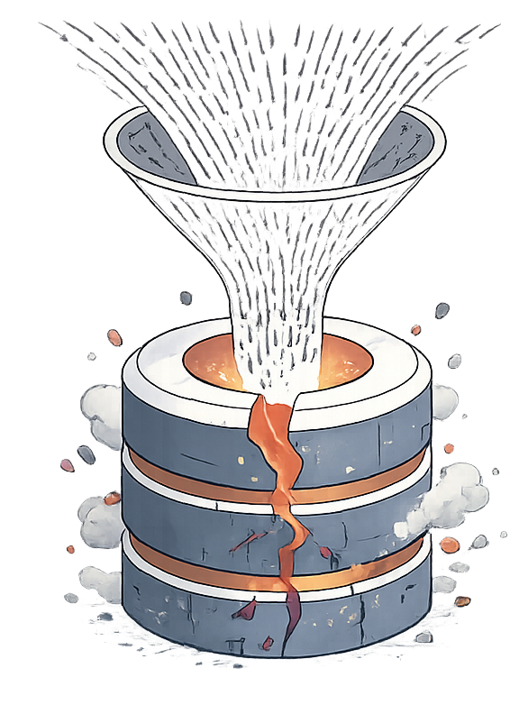
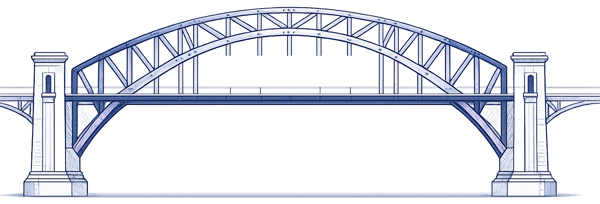

Caso práctico de arquitectura distribuida utilizando CockroachDB para garantizar consistencia, alta disponibilidad y escalabilidad.
Explorar proyecto ↓TinerPay es una plataforma fintech que permite a los usuarios crear cuentas digitales y gestionar wallets en distintas divisas. Los usuarios pueden enviar y recibir dinero en tiempo real mediante transferencias seguras registradas en una base de datos distribuida. El sistema opera entre Europa y Latinoamérica, donde la consistencia de los datos y la disponibilidad continua son críticas.
Crea una cuenta
Gestiona saldo
Envía dinero
TinerPay opera entre Europa y Latinoamérica con millones de transacciones financieras simultáneas. Una arquitectura centralizada no puede soportar esto.

(TinerPay)

CockroachDB resuelve los tres problemas anteriores de forma nativa: replica los datos entre nodos eliminando el punto único de fallo, escala horizontalmente añadiendo nodos al cluster sin interrupciones, y distribuye los datos por regiones reduciendo la latencia para usuarios en Europa y Latinoamérica.
Las transacciones financieras deben ejecutarse sin pérdida ni duplicación de datos.
Los datos se replican automáticamente entre nodos del cluster.
Permite añadir nodos al cluster para soportar más usuarios.
Reduce la latencia para usuarios en diferentes regiones.
El sistema utiliza un modelo relacional compatible con SQL. A continuación se identifican las cuatro entidades principales con sus campos, claves primarias (PK) y claves foráneas (FK).
Una vez identificadas las entidades, se definen las relaciones entre ellas para construir el modelo relacional completo.
Un usuario puede poseer múltiples wallets dentro del sistema.
1 : NUna divisa puede estar asociada a múltiples wallets.
1 : NUna wallet puede participar en múltiples transacciones como origen o destino.
1 : NInicialización y definición de tablas en CockroachDB
Crea la base de datos y la selecciona como contexto activo.
CREATE DATABASE tinerpay; USE tinerpay;
Entidad central. Añadimos deleted_at para soft delete y mantener historial completo.
CREATE TABLE users ( id UUID PRIMARY KEY DEFAULT gen_random_uuid(), name STRING NOT NULL, email STRING UNIQUE NOT NULL, deleted_at TIMESTAMP NULL, created_at TIMESTAMP DEFAULT now() );
Catálogo de divisas. Referenciada por wallets para garantizar integridad referencial.
CREATE TABLE currencies ( code STRING PRIMARY KEY, name STRING NOT NULL, symbol STRING NOT NULL );
Sin ON DELETE CASCADE — evitamos borrar wallets si se elimina un usuario.
CREATE TABLE wallets ( id UUID PRIMARY KEY DEFAULT gen_random_uuid(), user_id UUID REFERENCES users(id), currency_code STRING REFERENCES currencies(code), balance DECIMAL NOT NULL DEFAULT 0 CHECK (balance >= 0), created_at TIMESTAMP DEFAULT now() );
Sin CASCADE en FK — el historial financiero no se borra bajo ningún concepto.
CREATE TABLE transactions ( id UUID PRIMARY KEY DEFAULT gen_random_uuid(), from_wallet UUID REFERENCES wallets(id), to_wallet UUID REFERENCES wallets(id), amount DECIMAL NOT NULL CHECK (amount > 0), created_at TIMESTAMP DEFAULT now(), CHECK (from_wallet != to_wallet) );
Los índices aceleran las consultas más frecuentes del sistema.
Las claves primarias y el campo email (UNIQUE) ya tienen índice automático.
Los siguientes se crean explícitamente sobre las claves foráneas.
CREATE INDEX ON wallets (user_id);
Permite consultar todas las wallets de un usuario sin recorrer toda la tabla.
CREATE INDEX ON transactions (from_wallet);
Acelera la consulta del historial de envíos de una wallet concreta.
CREATE INDEX ON transactions (to_wallet);
Acelera la consulta del historial de recepciones de una wallet concreta.
CREATE INDEX ON wallets (currency_code);
Útil para filtrar wallets en una divisa específica (EUR, USD, etc.).
ℹ️ En CockroachDB los UUID como PK ya están indexados internamente. Solo se crean índices adicionales sobre los campos de búsqueda frecuente.
Crear usuario con wallet inicial — se usa un CTE para obtener el UUID generado y asociarlo a la wallet en una sola operación atómica.
BEGIN;
WITH new_user AS (
INSERT INTO users (name, email)
VALUES ('Diego', 'diego@gmail.com')
RETURNING id
)
INSERT INTO wallets (user_id, currency_code, balance)
SELECT id, 'EUR', 0 FROM new_user;
COMMIT;
Balances de un usuario activo — usa el índice wallets(user_id).
SELECT w.balance, w.currency_code FROM wallets w JOIN users u ON w.user_id = u.id WHERE u.email = 'diego@gmail.com' AND u.deleted_at IS NULL;
Historial de envíos de una wallet — usa el índice transactions(from_wallet).
SELECT t.amount, t.created_at FROM transactions t WHERE t.from_wallet = 'uuid-wallet-origen' ORDER BY t.created_at DESC;
Historial de recepciones de una wallet — usa el índice transactions(to_wallet).
SELECT t.amount, t.created_at FROM transactions t WHERE t.to_wallet = 'uuid-wallet-destino' ORDER BY t.created_at DESC;
Wallets por divisa — usa el índice wallets(currency_code).
SELECT w.id, w.balance, u.name FROM wallets w JOIN users u ON w.user_id = u.id WHERE w.currency_code = 'EUR' AND u.deleted_at IS NULL;
JOIN con users en la propia query — solo actualiza wallets de usuarios activos.
UPDATE wallets w SET balance = balance + 100 FROM users u WHERE w.user_id = u.id AND u.email = 'diego@gmail.com' AND u.deleted_at IS NULL;
Soft delete — marcamos deleted_at en lugar de borrar, preservando el historial financiero completo.
UPDATE users SET deleted_at = now() WHERE email = 'diego@gmail.com' AND deleted_at IS NULL;
¿Puede un usuario tener varias wallets?
Sí. Un usuario puede poseer múltiples wallets asociadas a su cuenta.
¿Qué significa ACID?
Atomicidad, Consistencia, Aislamiento y Durabilidad.
¿Qué es CockroachDB?
Una base de datos SQL distribuida con transacciones ACID y alta disponibilidad.
¿Qué pasa si falla un nodo del cluster?
Los otros nodos siguen operando. El sistema no cae gracias al consenso Raft.
¿Por qué se usa UUID como clave primaria?
Garantiza unicidad en un sistema distribuido sin riesgo de colisión entre nodos.
¿Qué hace el CHECK en la tabla wallets?
Garantiza que el balance nunca sea negativo.
¿Por qué no puedes borrar un usuario directamente?
Por obligación legal, el historial financiero debe ser inmutable y trazable.
¿Qué es un índice y para qué sirve?
Acelera las consultas más frecuentes sin recorrer toda la tabla.
El entorno se despliega utilizando Docker Compose.